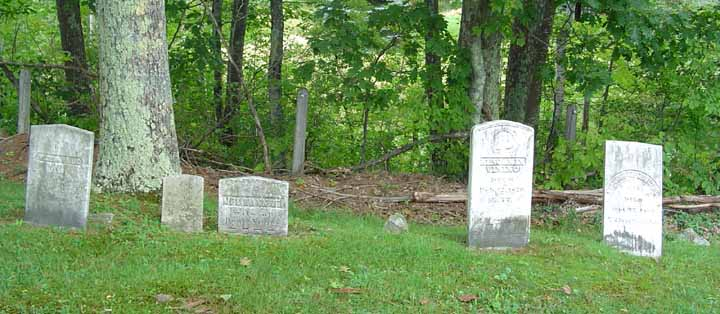
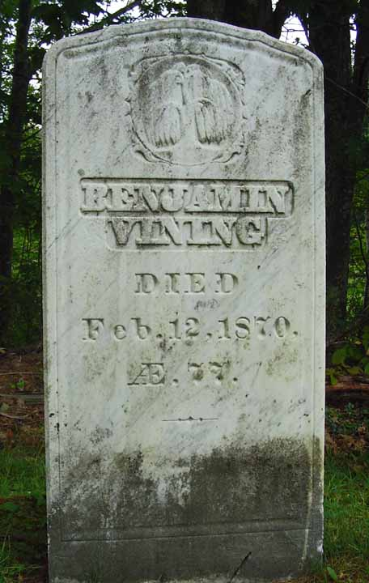
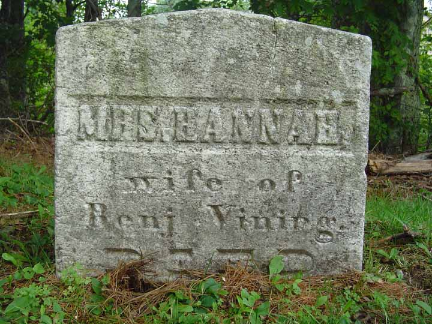
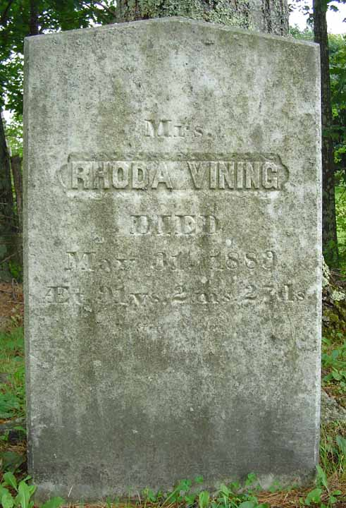
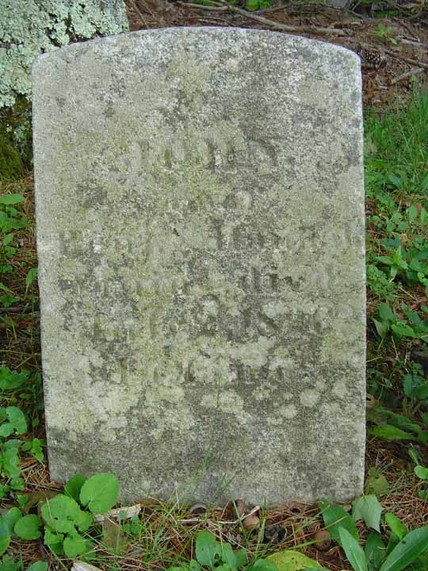

Census Data
| 1820 | 1830 | 1840 | 1850 | 1860 | 1870 | |
| Benjamin Vining | M 26–45 | M 30–40 | M 40–50 | 56 | 68 | dead |
| Hannah (Merrill) Vining | F 45 and older | F 40–50 | [see note below] | 58 | [dead?] | |
| Rhoda (Barnes) Vining | 60 | 72 [see note below] |
||||
| John Vining | dead |


Death Data
Cemetery lot for Benjamin Vining's family, in Pond Cemetery, Wales, Maine. Left to right, the stones belong to Rhoda (2nd wife), John (son), Hannah (1st wife), ? [a small rough natural stone], Benjamin, and George W. Purington. Purington's stone was included in the picture because of its proximity to Benjamin's stone and because it may be of genealogical importance. Following the image of the cemetery lot are images of the individual gravestones (except for the natural stone and the stone of George W. Purington).




